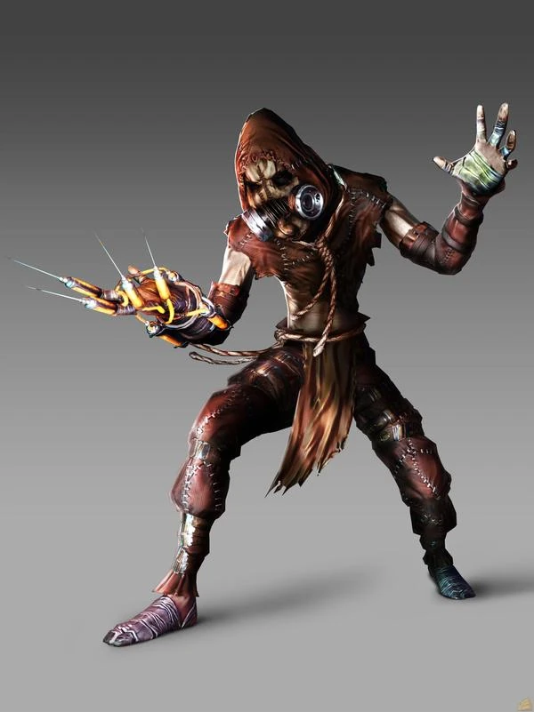

En las profundidades de Arkham, un lugar donde la cordura se desvanece y los secretos acechan en cada esquina, se encuentra el Asilo de Gotham. Sus muros de piedra ocultan más que simples celdas; albergan los demonios internos de los criminales más peligrosos de la ciudad. Pero esta noche, algo ha cambiado. El Joker, el payaso siniestro, ha sido capturado y llevado al corazón mismo del asilo. Sin embargo, su risa maníaca resuena en los pasillos, y la oscuridad se espesa como una niebla venenosa.
El Joker crea el caos en el asilo, liberando a otros villanos y sembrando el pánico. Su objetivo principal es enfrentarse a Batman y demostrar que él es el verdadero amo de Gotham.
A lo largo del juego, Batman se encuentra con el Espantapájaros en varias ocasiones. Estas escenas son intensas y llenas de tensión, ya que el villano juega con la mente de Batman y lo enfrenta a sus peores miedos.